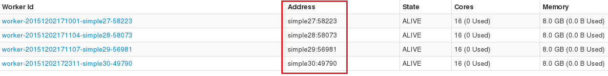
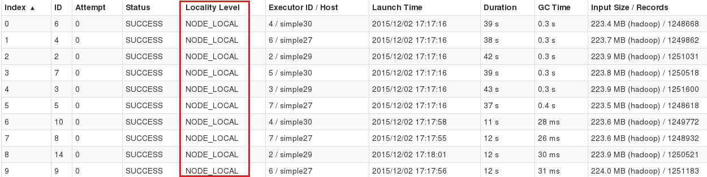

Running Spark on Tachyon
This guide describes how to run Apache Spark on Tachyon and use HDFS as a running example of Tachyon under storage system. Note that, Tachyon supports many other under storage systems in addition to HDFS and enables frameworks like Spark to read data from or write data to those systems.
Compatibility
If the versions of Spark and Tachyon form one of the the following pairs, they will work together out-of-the-box.
| Spark Version | Tachyon Version |
|---|---|
| 1.0.x and Below | v0.4.1 |
| 1.1.x | v0.5.0 |
| 1.2.x | v0.5.0 |
| 1.3.x | v0.5.0 |
| 1.4.x | v0.6.4 |
| 1.5.x | v0.7.1 |
If the version of Spark is not supported by your Tachyon installation by default (e.g., you are
trying out the latest Tachyon release with some older Spark installation), one can recompile Spark
by updating the correct version of tachyon-client in Spark dependency. To do that, edit
spark/core/pom.xml and change the dependency version of tachyon-client to
your_tachyon_version:
<dependency>
<groupId>org.tachyonproject</groupId>
<artifactId>tachyon-client</artifactId>
<version>your_tachyon_version</version>
...
</dependency>
Prerequisites
- Make sure your Spark installation is compatible with Tachyon installation. Check Compatibility session for more instructions.
- Tachyon cluster has been set up in accordance to these guides for either Local Mode or Cluster Mode.
- If Spark version is earlier than
1.0.0, please add the following line tospark/conf/spark-env.sh.
export SPARK_CLASSPATH=/pathToTachyon/client/target/tachyon-client-0.8.2-jar-with-dependencies.jar:$SPARK_CLASSPATH
- If Tachyon is run on top of a Hadoop 1.x cluster, create a new file
spark/conf/core-site.xmlwith the following content:
<configuration>
<property>
<name>fs.tachyon.impl</name>
<value>tachyon.hadoop.TFS</value>
</property>
</configuration>
- If you are running tachyon in fault tolerant mode with zookeeper and the Hadoop cluster is a 1.x,
add the following additionally entry to the previously created
spark/conf/core-site.xml:
<property>
<name>fs.tachyon-ft.impl</name>
<value>tachyon.hadoop.TFSFT</value>
</property>
and the following line to spark/conf/spark-env.sh:
export SPARK_JAVA_OPTS="
-Dtachyon.zookeeper.address=zookeeperHost1:2181,zookeeperHost2:2181 \
-Dtachyon.zookeeper.enabled=true \
$SPARK_JAVA_OPTS
"
Use Tachyon as Input and Output
This section shows how to use Tachyon as input and output sources for your Spark applications.
Put a file foo into HDFS, assuming namenode is running on localhost:
$ hadoop fs -put -f foo hdfs://localhost:9000/foo
Run the following commands from spark-shell, assuming Tachyon Master is running on localhost:
> val s = sc.textFile("tachyon://localhost:19998/foo")
> val double = s.map(line => line + line)
> double.saveAsTextFile("tachyon://localhost:19998/bar")
Open your browser and check http://localhost:19999. There should be an
output file bar which doubles each line in the file foo.
When running Tachyon with fault tolerant mode, you can point to any Tachyon master:
> val s = sc.textFile("tachyon-ft://stanbyHost:19998/foo")
> val double = s.map(line => line + line)
> double.saveAsTextFile("tachyon-ft://activeHost:19998/bar")
Persist Spark RDDs into Tachyon
This feature requires Spark 1.0 or later and Tachyon 0.4.1 or later. Please refer to Spark guide for more details about RDD persistence.
To persist Spark RDDs, your Spark programs need to have two parameters set:
spark.externalBlockStore.url and spark.externalBlockStore.baseDir.
spark.externalBlockStore.urlis the URL of the Tachyon Filesystem in the TachyonStore. By default, its value istachyon://localhost:19998.spark.externalBlockStore.baseDiris the base directory in the Tachyon Filesystem to store the RDDs. It can be a comma-separated list of multiple directories in Tachyon. By default, its value isjava.io.tmpdir.
To persist an RDD into Tachyon, you need to pass the StorageLevel.OFF_HEAP parameter. The
following is an example with Spark shell:
$ ./spark-shell
> val rdd = sc.textFile(inputPath)
> rdd.persist(StorageLevel.OFF_HEAP)
Check the spark.externalBlockStore.baseDir using Tachyon’s web UI (the default URI is
http://localhost:19999), when the Spark application is running. You should
see a number of files there; they are the persisted RDD blocks. Currently, the files will be cleaned
up when the Spark application finishes.
Data Locality
If Spark task locality is ANY while it should be NODE_LOCAL, it is probably because Tachyon and
Spark use different network address representations, maybe one of them uses hostname while
another uses IP address. Please refer to this jira ticket for more details, where you can find solutions
from the Spark community.
Note: Tachyon uses hostname to represent network address except in version 0.7.1 where IP address is used. Spark v1.5.x ships with Tachyon v0.7.1 by default, in this case, by default, Spark and Tachyon both use IP address to represent network address, so data locality should work out of the box. But since release 0.8.0, to be consistent with HDFS, Tachyon represents network address by hostname. There is a workaround when launching Spark to achieve data locality. Users can explicitly specify hostnames by using the following script offered in Spark. Start Spark Worker in each slave node with slave-hostname:
$ $SPARK_HOME/sbin/start-slave.sh -h <slave-hostname> <spark master uri>
For example:
$ $SPARK_HOME/sbin/start-slave.sh -h simple30 spark://simple27:7077
You can also set the SPARK_LOCAL_HOSTNAME in $SPARK_HOME/conf/spark-env.sh to achieve this. For
example:
SPARK_LOCAL_HOSTNAME=simple30
In either way, the Spark Worker addresses become hostnames and Locality Level becomes NODE_LOCAL as shown in Spark WebUI below.

